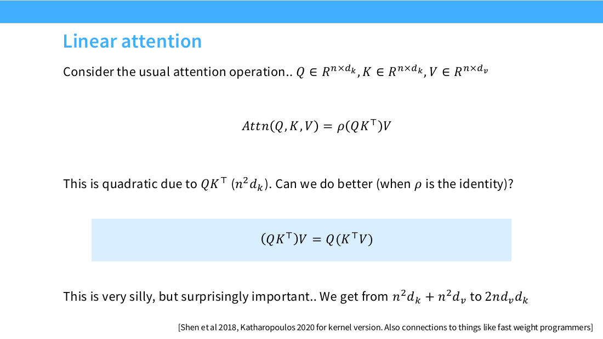
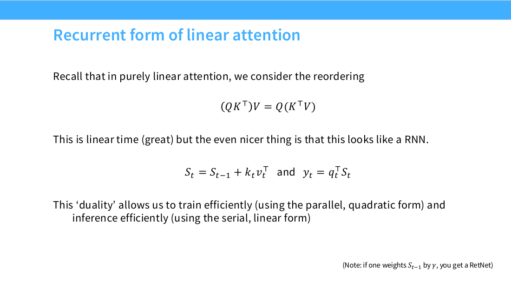
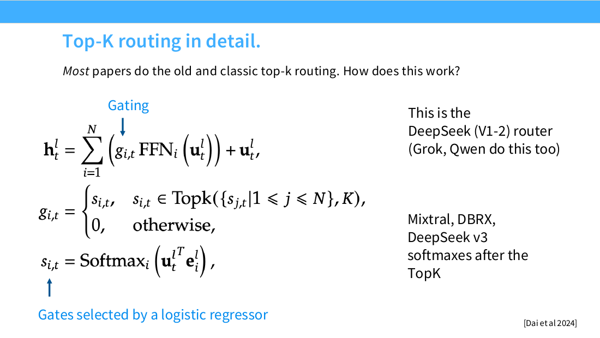
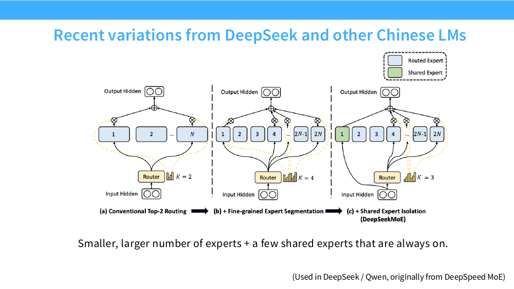
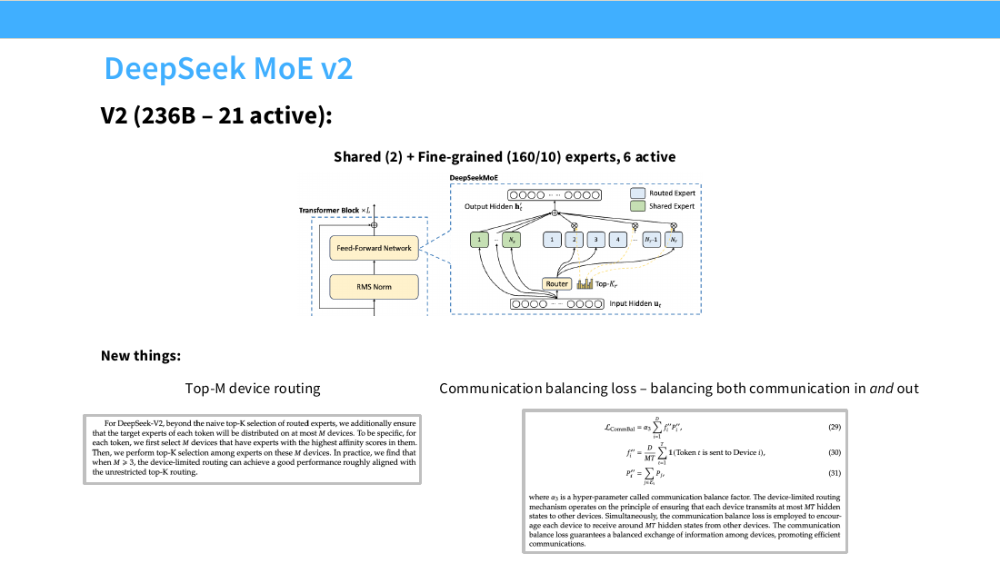
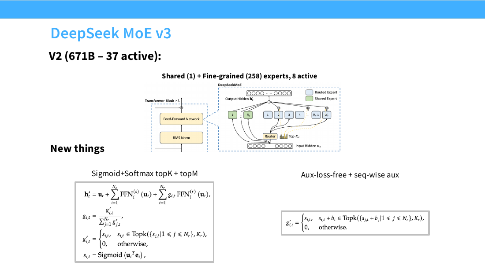

<script setup>
import { withBase } from 'vitepress'
</script>

<article class="native-document format-course" data-format="course" data-design="linux-notebook" aria-label="第 4 讲 · 注意力变体与混合专家">
<header class="document-intro note-hero">
<p class="note-kicker">CS336学习笔记 <span>课程讲义</span></p>
<h1 id="lecture-04" tabindex="-1">第 4 讲 · 注意力变体与混合专家 <a class="header-anchor" href="#lecture-04" aria-label="章节链接">&#8203;</a></h1>
<p class="note-deck">注意力怎样减少位置配对与历史缓存，混合专家怎样在相近计算量下容纳更多参数？沿着矩阵重排、状态更新、稀疏路由和 DeepSeek 结构演进，分别算清收益与代价。</p>
<p>本篇依据第 4 讲的 60 页幻灯片，页码均指 PDF 页序。模型配置旁标出来源，另行手算的形状、复杂度与例子标为“推导”。阅读时可以一直追问：省掉的是乘加、显存读写，还是每个词元需要访问的参数？</p>
</header>
<nav class="note-jump" aria-label="本篇导读"><a href="#context">注意力成本</a><a href="#linear">线性重排</a><a href="#hybrid">混合架构</a><a href="#moe">专家路由</a><a href="#why">收益与代价</a><a href="#training">训练难点</a><a href="#deepseek">DeepSeek 三代</a><a href="#balancing">负载均衡</a><a href="#latent">MLA 与 MTP</a><a href="#summary">本篇要点</a></nav>

<section class="document-section note-panel" aria-labelledby="context">
<h2 id="context" tabindex="-1">注意力贵在哪 <a class="header-anchor" href="#context" aria-label="章节链接">&#8203;</a></h2>
<p>把注意力变便宜之前，要先分清训练时的全序列计算和解码时的逐词元读取。设序列长度为 T，单个注意力头的键、值宽度都暂取 d。查询矩阵 Q 与键矩阵 K 都有 T 行，每个查询与每个键做一次长为 d 的点积，所以 QKᵀ 需要 T²d 次乘加；得到的分数矩阵有 T² 个元素，再乘 V 又需要 T²d 次乘加。这是第 2–4 页成本讨论的具体展开，以下数字均为推导。</p>
<p>例如 T＝4096、d＝128，仅 QKᵀ 就约需 21.5 亿次乘加。若显式保存全部分数，按每元素 2 字节计算，单个头就占 32 MiB；序列翻倍到 8192，分数存储变成 128 MiB。这里还没算批次、多个头、梯度与其他中间结果。因果掩码只允许看当前位置及以前，合法配对为 T(T＋1)/2，虽能省常数，却仍随长度平方增长。</p>
<p>解码的账不一样：每一步通常只有一个新查询，不会重新生成完整的 T×T 分数矩阵。键值缓存（KV cache）保存历史词元的 K、V，避免重新投影历史输入，但新查询仍要读取这些键来打分，再读取值来聚合。单头每步的读取量与 T(d_k＋d_v) 成正比，多个头、多个层和批次还会继续放大它。当计算量相对读取字节数偏小，尤其是小批次逐词元解码时，性能就容易由显存带宽限制；缓存解决了重复计算，并没有让访问历史免费。</p>
<p>第 3 页把局部与全局组合、系统优化放在同一张“工具箱”里，第 4–5 页接着讨论线性注意力。滑动窗口让每个位置最多看 W 个邻居，把位置配对数从 T² 压到约 TW；局部加全局则用少量跨窗口连接补回信息通路，全局位置的数量仍要计入成本。系统优化通过分块、复用与融合减少中间矩阵落到显存的次数，可以保留原来的注意力语义，却不会自动消除所有位置间的点积。线性注意力改动得更深：它改变聚合规则，把历史写进一个固定形状的状态。</p>
<p>你可以用“长度翻倍”来检查自己理解的是哪种节省。全注意力的全序列算术量约变四倍，固定窗口或固定状态的算术量约变两倍，这是推导而非计时结论。真实速度还受矩阵尺寸、硬件利用率与数据搬运影响。某个实现没有显式存下 T² 分数，并不意味着它只做了线性数量的配对。</p>
</section>

<section class="document-section note-panel" aria-labelledby="linear">
<span id="alternatives"></span>
<h2 id="linear" tabindex="-1">线性注意力：把 softmax 拿掉后能重排 <a class="header-anchor" href="#linear" aria-label="章节链接">&#8203;</a></h2>
<p>线性注意力（linear attention）的关键，是先改变运算，再使用矩阵乘法的结合律。第 4 页写成 ρ(QKᵀ)V，其中 ρ 表示对分数的变换；只有这里把它取为恒等映射，才能直接把括号移到 KᵀV。标准注意力中逐行执行的 softmax 依赖该行全部分数，不能穿过矩阵乘法移到括号外。因此下面的等式对未归一化的双线性聚合精确成立，却不是标准 softmax 注意力的等价加速公式。</p>
<div class="math-block" data-tex="Q\in\mathbb{R}^{T\times d_k},\quad K\in\mathbb{R}^{T\times d_k},\quad V\in\mathbb{R}^{T\times d_v},\qquad (QK^\top)V=Q(K^\top V)"></div>
<p>推导时从中间矩阵的形状入手最稳妥。左边先生成 T×T 的矩阵，花 T²d_k 次乘加，再乘 T×d_v 的 V，花 T²d_v 次；右边先用 d_k×T 乘 T×d_v，得到 d_k×d_v 的状态，花 Td_kd_v 次，再由 Q 读取它，又花 Td_kd_v 次。两边的输出都是 T×d_v，当 d_k＝d_v＝d 时，算术量就从 O(T²d) 变成 O(Td²)。收益取决于 T 相对 d 的大小，短序列不一定划算。</p>
<figure class="note-figure"><figcaption>第 4 页：括号改变中间结果的形状。等式成立的前提是 ρ 为恒等映射。</figcaption></figure>
<p>把刚才的 T＝4096、d＝128 代回去，左边两次乘法共约 42.9 亿次乘加，右边约 1.34 亿次，相差 32 倍，这是推导。右边的状态只有 16384 个元素，按 2 字节计算为 32 KiB，比显式分数矩阵的 32 MiB 小得多。这个比较只覆盖注意力核心乘法，投影层、门控和训练中间量都没有算进去。它说明为什么重排值得研究，不能直接当成端到端速度提升。</p>
<div class="note-table" tabindex="0" role="region" aria-label="注意力复杂度对照"><table><thead><tr><th>单头口径（推导）</th><th>传统全注意力</th><th>纯线性注意力</th></tr></thead><tbody><tr><td>全序列核心乘加</td><td>T²(d_k＋d_v)</td><td>2Td_kd_v</td></tr><tr><td>主要聚合中间量</td><td>显式实现为 T×T；融合实现可避免完整落盘</td><td>d_k×d_v 状态</td></tr><tr><td>因果解码持久历史</td><td>T(d_k＋d_v) 个缓存元素</td><td>d_kd_v 个状态元素</td></tr><tr><td>每步解码核心工作量</td><td>O(T(d_k＋d_v))</td><td>O(d_kd_v)</td></tr><tr><td>读取历史的方式</td><td>逐位置打分并归一化</td><td>查询读取累计状态</td></tr></tbody></table></div>
<p>第 5 页进一步把因果版本写成递推。为了不把行列方向混在一起，这里统一把 q_t、k_t、v_t 看作列向量，形状分别为 d_k×1、d_k×1、d_v×1。外积 k_tv_tᵀ 是 d_k×d_v，能加到同形状的 state_t；查询读取时用 q_tᵀ，输出 y_t 是 1×d_v 的行向量。如果代码把查询存为一行，那么同一操作就写作 y_t＝q_t state_t。</p>
<div class="math-block" data-tex="S_0=0,\qquad S_t=S_{t-1}+k_tv_t^\top\in\mathbb{R}^{d_k\times d_v},\qquad y_t=q_t^\top S_t=\sum_{j=1}^{t}(q_t^\top k_j)v_j^\top"></div>
<p>最后一个等号是推导，它说明累计状态为什么能代替逐位置求和。生成新词元时，你只需把新的键值外积写入 S，再用查询读出结果；无论历史有多长，S 的形状都不变。这里保留的是聚合后的历史信息，过去每个位置的键和值已经混合在一起。若一层采用这种递推，便不需要该层不断增长的 KV 缓存；混合模型里保留的全注意力层仍然需要各自的缓存。</p>
<figure class="note-figure"><figcaption>第 5 页：同一个因果运算可以按序更新状态。训练时可以采用并行表达，推理时使用递推表达。</figcaption></figure>
<details class="note-details"><summary>推导：用两个词元检查形状、更新顺序与因果性</summary>
<p>设 d_k＝d_v＝2，k₁＝(1,0)ᵀ、v₁＝(2,3)ᵀ，第一次写入后 S₁ 的两行是 (2,3) 与 (0,0)。再取 k₂＝(0,1)ᵀ、v₂＝(5,7)ᵀ，得到 S₂ 的两行为 (2,3) 与 (5,7)。若 q₂＝(1,1)ᵀ，读出 y₂＝(7,10)，正好等于两个值向量之和，因为两个点积分数都为 1。</p>
<p>这个例子还检查了一个实现陷阱：先更新再读出，当前位置才能看到自己的值。若先读 S₁ 再写第二个词元，就变成严格只看过去的另一种掩码。训练时也不能把全序列 KᵀV 直接拿给每一个查询，那会泄漏未来；必须使用前缀状态，或与其等价的因果掩码并行表达。</p>
</details>
<p>便宜的代价也能从这个例子看到。没有 softmax 后，权重不再保证非负且和为 1，状态还可能随着持续写入而增大；许多不同历史也会映射到同一个固定大小的状态。这里的长程检索限制是机制上的推论：若需要从大量相似键中精确取回某一条旧记录，混合写入会产生干扰，而全注意力仍能对保留的每个位置重新评分。固定状态更省资源，但不能据此断言它保存了与完整历史相同的可访问细节。</p>
</section>

<section class="document-section note-panel" aria-labelledby="hybrid">
<h2 id="hybrid" tabindex="-1">混合架构：多数层压缩，少数层回看 <a class="header-anchor" href="#hybrid" aria-label="章节链接">&#8203;</a></h2>
<p>混合架构要回答的是：能否大部分时间使用便宜状态，只在少数层保留逐位置检索？第 6 页给出 MiniMax M1 与 minimax-text-01 的 7:1 配置，即七个线性注意力层配一个全注意力层。第 8 页把 Nemotron 3 描述为约 3:1 的 Mamba／注意力混合，第 10 页则给出 Qwen 3.5／Qwen Next 的 3:1 门控 Delta 网络与注意力混合。它们体现了相近的分工，但三种状态更新机制不能都当成前节的简单累加。</p>
<p>推导一个理想化的缓存账：若八个层的宽度相同，七层用固定状态，随 T 增长的 KV 缓存部分只来自剩下的一层。于是这个增长项约为八层全注意力的八分之一，另加七份固定状态。对于三比一的组合，同样口径下增长项约为四分之一。这只是分层缓存的算术，不能把它读成总显存或生成延迟也必然下降到同一比例，因为参数、其他激活以及全注意力层的计算仍然存在。</p>
<p>第 7 页先给旧状态乘上一个依赖输入的门 γ_t，使模型可以控制保留多少历史。第 9 页的门控 Delta 网络（Gated Delta Net，GDN）又加入沿当前键方向的擦除项，以及控制写入强度的 β_t。直觉上，纯线性注意力不断往同一个记事本里相加，GDN 则能先削弱当前键关联的旧内容，再写入新值。它增加的是对状态内容的修改能力，不会恢复逐词元保存的完整历史。</p>
<div class="math-block" data-tex="S_t=\gamma_t(I-\beta_tk_tk_t^\top)S_{t-1}+\beta_tk_tv_t^\top\qquad\text{（第 9 页）}"></div>
<p>推导两个边界就能读懂这条公式。β_t＝0 时，写入关闭，状态只剩 γ_t 控制的保留；若键已单位归一化、β_t＝1，则 I−k_tk_tᵀ 去掉旧状态在该键方向上的分量。键未归一化时不能直接把这个矩阵称为正交投影，门值不同也只是部分削弱。门控增强了状态的可用性，但它是否弥补了某个任务中的检索损失，需要具体实验回答。</p>
<p>多数状态层负责低成本传播与更新信息，少数全注意力层负责更细的跨位置交互，这是理解混合设计的一种机制解释。第 11 页展示了一些小比例全注意力也能取得较低损失的证据，同时明确说受控消融还不多。不同模型的规模、数据与训练方案并不相同，所以这些例子支持“混合是可行而常见的路线”，不足以证明某个比例普遍最优。第 12–13 页还给出用轻量索引选择位置的稀疏注意力路线：它减少实际读取的位置，保留的是另一种信息访问方式。</p>
</section>

<section class="document-section note-panel" aria-labelledby="moe">
<span id="experts"></span>
<h2 id="moe" tabindex="-1">MoE 的基本形状：一个词元只调用部分专家 <a class="header-anchor" href="#moe" aria-label="章节链接">&#8203;</a></h2>
<p>混合专家（Mixture of Experts，MoE）把节省的对象从历史位置换成前馈参数。第 15、25 页的常见结构，是把前馈网络（FFN）替换为 N 个专家网络，再增加一个路由器；每个专家的输入、输出宽度与原来的接口兼容。一个词元进入该层后，只执行被选中的少数网络。注意力仍负责位置之间的信息交换，专家网络则对该词元的隐藏向量做变换。</p>
<p>第 31 页的 top-k 路由可以拆成三步。输入隐藏向量 x 先与 N 个路由向量打分，得到长度为 N 的分数；接着取其中最大的 k 个索引，其他专家权重置零；再执行被选中的 FFN，并按路由权重加权求和。若 x 的宽度为 d_model，每个专家输出也必须是 d_model，求和后才能接回残差通路。下面公式省略残差与共享专家，只表示被路由的部分。</p>
<div class="math-block" data-tex="\mathcal{I}(x)=\operatorname{TopK}(s(x),k),\qquad y(x)=\sum_{i\in\mathcal{I}(x)}g_i(x)\operatorname{FFN}_i(x)"></div>
<figure class="note-figure"><figcaption>第 31 页：取 top-k 的是专家索引，求和的则是专家输出。图中的残差项不属于专家选择。</figcaption></figure>
<p>归一化放在哪里，会改变输出的尺度。第 31 页左侧先对所有专家做 softmax，再保留 top-k，此时剩余权重的和可能小于 1；若选中之后重新归一化，权重之和才回到 1。推导例子：四个分数经 softmax 后为 (0.4,0.3,0.2,0.1)，选前两个且不重归一化时输出为 0.4E₁＋0.3E₂，重归一化后则为 (4/7)E₁＋(3/7)E₂。两者选中相同专家，却不能在实现中随意互换。</p>
<div class="note-table" tabindex="0" role="region" aria-label="MoE路由变体"><table><thead><tr><th>变体</th><th>怎样选</th><th>主要边界与出处</th></tr></thead><tbody><tr><td>词元选专家 top-k</td><td>每个词元保留 k 个专家</td><td>每词元工作量可控，专家负载可能不均；第 27–31 页</td></tr><tr><td>专家选词元</td><td>每个专家挑选输入词元</td><td>专家容量可控，单个词元的入选次数未必相同；第 27 页，边界为推导</td></tr><tr><td>哈希路由</td><td>按预定映射分配</td><td>作为常见基线，不靠相同的学习打分过程；第 29 页</td></tr><tr><td>全局匹配</td><td>把分配写成匹配优化问题</td><td>同时协调多个分配，增加求解工作；第 27、30 页</td></tr><tr><td>top-k 加设备约束</td><td>限制选中专家涉及的设备</td><td>兼顾专家选择与通信范围；第 55–56 页</td></tr></tbody></table></div>
<p>总参数量统计模型保存的全部权重，激活参数量统计处理一个词元时实际用到的那部分权重。第 56 页给出的 DeepSeek v3 是 671B 总参数、37B 激活参数，B 表示十亿；两者之比约为 18.1，这是推导。这个比值并不等于把一个 671B 稠密模型无代价加速了 18.1 倍，因为路由、通信以及两种架构的算子结构都不同。它表达的是每个词元只调用很小一部分总容量。</p>
<p>再做一个不对应任何具体模型的参数账（推导）。忽略偏置，普通两矩阵 FFN 的隐藏宽度为 m、输入宽度为 d，参数为 2dm；现在准备八个宽度 m/2 的专家，每个有 dm 个参数，每词元选两个。总专家参数变成 8dm，是原来的四倍，而激活专家参数仍为 2dm，主矩阵乘加也与原 FFN 相近。多出来的路由开销和通信不能藏进“同 FLOPs”里，这个说法只在忽略这些附加项、比较专家主计算时成立。</p>
<p>第 32 页把一个大专家拆成多个小专家，称为细粒度专家（fine-grained expert）。在总激活宽度相近时，更多小专家允许更丰富的选择组合；共享专家（shared expert）则对所有词元始终启用，承担不必重复路由的公共变换。图中从两个大专家，变成四个小专家，再变成一个共享加三个路由专家，正好演示了怎样重新分配同一份激活预算。共享部分也消耗参数与计算，计算激活量时必须把它加回来。</p>
<figure class="note-figure"><figcaption>第 32 页：细分改变选择粒度，共享改变始终执行的部分。这两个设计可以组合使用。</figcaption></figure>
<p>第 35 页的 DeepSeek v1 配置是 64 个路由专家、每词元选 6 个，另有 2 个共享专家，小专家宽度比例为 1/4。按等宽专家近似，激活宽度相当于 (6＋2)/4＝2 份参照 FFN，这是推导，也说明“选六个”本身并不能代表计算很贵。第 33 页的消融支持更多专家与共享专家有益，但第 34 页的 OlMoE 消融只观察到细粒度收益，没有共享专家收益。共享专家是否值得保留，应看相同预算下的实验，不能由架构名称直接决定。</p>
</section>

<section class="document-section note-panel" aria-labelledby="why">
<h2 id="why" tabindex="-1">为什么 MoE 现在流行 <a class="header-anchor" href="#why" aria-label="章节链接">&#8203;</a></h2>
<p>MoE 的吸引力来自把参数容量与每词元计算量部分分开。第 16–19 页依次列出四条理由：同 FLOPs 下更多参数可以取得更好结果，训练可以更快，质量能与稠密模型竞争，并且专家便于分布到多台设备。这几条理由相互关联，但衡量方式不同。损失下降、达到目标质量的训练时间、最终任务分数和可扩展设备数，应分别看证据。</p>
<p>前节的算术例子解释了第一条为何可能成立：每次只算两个专家，却能在全体词元之间使用八个专家的参数。第二条则取决于新增容量是否让模型更快达到某个质量目标，以及每步额外调度是否足够便宜。第 17 页展示的是训练收益的经验结果，并不意味着任意 MoE 的单步时间都短于同激活参数量的稠密模型。第 18 页的竞争力也应理解为具体模型比较，而不是稀疏结构天然保证质量更高。</p>
<p>易并行的原因很具体：不同专家可以放在不同设备上，收到各自的词元后独立执行 FFN。困难也出在这个入口上，输入要先被发送到专家所在设备，输出再被收集回来；第 44–46 页把这种系统开销单独讨论。推导一个负载例子：四台设备理想各处理四分之一工作，若其中一台收到一半、其余三台分享另一半，在同速且忽略通信时，最忙设备就要花理想值的两倍时间。平均负载看似不大，也可能被这台设备拖住整个批次。</p>
<p>还有一笔不能省的显存账：所有专家权重总得放在某处，通常要跨设备分片容纳。按 671B 参数、每参数 2 字节粗算，仅权重就约 1.34 TB（十进制），这是推导，尚未包含缓存、梯度与优化器状态。37B 激活参数说明一个词元的调用范围，却不能据此只为 37B 参数安排存储。MoE 用稀疏调用换容量，并没有把未调用的权重从模型里删掉。</p>
<p>训练目标和微调还会带来另一组代价。第 24 页指出基础设施复杂、训练目标带有启发式成分且有时不稳定，第 50 页则展示稀疏 MoE 在较小微调数据上容易过拟合。该页给出的应对包括只微调非 MoE 的 MLP，以及 DeepSeek 使用 1.4M 条监督微调数据。数据覆盖不足时，不同专家收到的有效样本还可能差很多，因此不能把增加专家数当成小数据任务中无条件有效的容量扩展。</p>
</section>

<section class="document-section note-panel" aria-labelledby="training">
<h2 id="training" tabindex="-1">训练难点之一：路由选择不可导 <a class="header-anchor" href="#training" aria-label="章节链接">&#8203;</a></h2>
<p>路由训练的难点，是既要保留稀疏执行，又要学会哪些专家值得被执行。第 36 页指出，top-k 的离散选择不能直接按普通连续运算求导。两个分数只要不跨过排序边界，入选集合就不变；一旦跨过边界，专家集合突然切换。若为获得所有候选的反馈而把所有专家都执行一遍，又失去了训练时最想要的稀疏性。</p>
<p>这里不能误读成“整个路由器没有梯度”。对一个已经选定的集合，专家输出与连续门权重仍可参与反向传播，困难在于如何给离散的换人决定提供可靠学习信号。推导一个边界：top-1 若只对选中元素做 softmax，它的权重恒为 1，这条权重路径就不会提供有用的相对打分梯度；若先对全体分数归一化再选择，选中权重仍随分数变化。前节讨论的归一化位置，因而同时影响数值尺度和训练信号。</p>
<p>第 37 页介绍用 REINFORCE 把路由视为策略：抽取专家，观察最终表现，再提高好选择的概率。这样能为离散决策构造梯度估计，但估计方差与实现复杂度较高，幻灯片也说收益还不足以使它成为明确赢家。第 38 页使用高斯扰动改变路由分数，让专家选择不那么脆弱；第 39 页则介绍均匀乘性扰动，并说明后续工作又移除了这种做法。随机探索能改变专家接收的训练样本，但不会让硬 top-k 在数学上突然变成处处可导。</p>
<p>第 36 页还列出启发式均衡损失，这是实际训练中重要的辅助信号。它推动路由器不要把样本长期集中给少数专家，却并不精确回答“这个词元送给另一个专家会怎样”。这种区分很有用：主任务损失训练被执行的计算路径，辅助目标改善整个分配过程的运行条件。把两者混成一个问题，就容易误以为负载均匀已经证明专家选择最优。</p>
</section>

<section class="document-section note-panel" aria-labelledby="balancing">
<h2 id="balancing" tabindex="-1">训练难点之二：负载均衡与数值稳定 <a class="header-anchor" href="#balancing" aria-label="章节链接">&#8203;</a></h2>
<p>负载均衡要避免一些专家排长队，另一些专家几乎收不到词元。第 40 页以 top-1 为例，定义 f_i 为批次中实际送往专家 i 的词元比例，P_i 为路由器给该专家的平均概率。前者记录真实分配，后者保留可微的概率信息；把两者相乘，就能对已经繁忙且仍被赋予较高概率的专家施加更大惩罚。这里用 B 表示批次中的词元总数，以免和前面单条序列长度 T 混淆。</p>
<div class="math-block" data-tex="L_{\mathrm{bal}}=\alpha N\sum_{i=1}^{N}f_iP_i,\qquad f_i=\frac{1}{B}\sum_x\mathbf{1}[\arg\max_jp_j(x)=i],\quad P_i=\frac{1}{B}\sum_xp_i(x)"></div>
<details class="note-details"><summary>推导：均衡损失怎样给热门专家更强的压力</summary>
<p>把不可导的实际分配 f_i 当作固定量，对某个词元的概率 p_i(x) 求导，得到 αNf_i/B。假设四个专家收到的比例为 (0.5,0.25,0.25,0)，第一个专家对应的直接概率导数是第二个的两倍。再经由 softmax 的雅可比传回原始分数，概率之间会相互影响，因此不能把这些偏导当成彼此独立的分数更新。</p>
<p>若 f_i 与 P_i 都均匀，四项内积为 1/4，乘 N 后损失为 α。若两者都集中到同一个专家，损失变成 4α。这个端点比较说明了惩罚方向，却不是对所有中间分配的最优性证明，因为实际分配比例与平均概率不是同一个量。</p>
</details>
<p>第 41 页还把均衡从专家层面聚合到设备层面，因为最终等待的是设备上的总工作。第 42 页的 DeepSeek v3 为每个专家增加偏置 b_i，用 s_i＋b_i 排序选人，却用原来的 s_i 计算输出权重。按负载在线调节偏置，可以降低繁忙专家下一轮被选中的机会，提高空闲专家的机会，同时避免把均衡偏置直接混进内容权重。该页仍保留序列级辅助均衡项，因此“无辅助损失均衡”不能理解为训练目标里完全没有辅助损失。</p>
<p>第 43 页给出了去掉负载均衡损失的实际对照。无均衡的曲线中，专家分配明显集中，部分专家接近收不到词元，同时训练及验证损失较差；有均衡时各专家的分配更接近。这里支持的是该组实验中均衡对训练与利用率都有帮助。它不要求每一条序列、每一个批次都强制完全均分，因为路由还需要保留与输入相关的选择空间。</p>
<p>容量限制会进一步让模型输出受同批其他请求影响。第 47 页指出，如果某个专家收到的词元超过可处理容量，系统可能丢弃部分路由分配；你的词元是否被处理，就可能取决于同时进来的其他词元。即便采样温度固定，改变批次构成也可能改变计算路径。这种额外随机性来自批次级调度与丢弃策略，不是所有 MoE 都必须具有的语义。</p>
<p>第 48 页把路由器使用 Float32 列为稳定性措施，第 49 页则展示路由器 z-loss 的消融：去掉它后，训练曲线出现更多尖峰。z-loss 是作用于路由器分数尺度的稳定化正则，与分配负载的均衡损失解决不同问题。它约束的是路由打分的数值行为，并不是对语言模型输出端再加一次“让专家均匀”的惩罚。看训练故障时，负载偏斜、容量溢出和数值不稳定应分别检查，单看一个总损失很难分辨它们。</p>
</section>

<section class="document-section note-panel" aria-labelledby="deepseek">
<h2 id="deepseek" tabindex="-1">DeepSeek 这条线：容量增长后，通信成为设计的一部分 <a class="header-anchor" href="#deepseek" aria-label="章节链接">&#8203;</a></h2>
<p>把三代结构并排放，可以看见专家设计怎样逐步与设备调度结合。第 54 页的 v1 已有共享专家和细粒度专家，采用标准 top-k，并在专家、设备两个层面加辅助均衡。第 55 页的 v2 扩大专家池，同时增加设备选择与通信均衡。第 56 页的 v3 则把路由打分、选择偏置和序列级均衡进一步分开，这些改变分别对应容量、通信和训练干扰问题。</p>
<div class="note-table" tabindex="0" role="region" aria-label="DeepSeek三代结构对照"><table><thead><tr><th>配置</th><th>v1</th><th>v2</th><th>v3</th></tr></thead><tbody><tr><td>总／激活参数</td><td>16B／2.8B</td><td>236B／21B</td><td>671B／37B</td></tr><tr><td>路由专家数</td><td>64</td><td>160</td><td>256</td></tr><tr><td>每词元选中路由专家</td><td>6</td><td>6</td><td>8</td></tr><tr><td>共享专家数</td><td>2</td><td>2</td><td>1</td></tr><tr><td>细粒度宽度比例</td><td>1/4</td><td>1/10</td><td>1/14</td></tr><tr><td>路由与均衡重点</td><td>标准 top-k；专家＋设备辅助损失</td><td>top-M 设备限制；通信均衡</td><td>sigmoid 分数、选后归一化；专家偏置＋序列辅助项</td></tr><tr><td>页码</td><td>第 35、54 页</td><td>第 55 页</td><td>第 35、42、56 页</td></tr></tbody></table></div>
<p>这里要明确一处材料内部差异。第 56 页标题是 v3，参数行却写着“V2”，细粒度专家数还写成 258；第 35 页的汇总表则明确列出 v3 的 256 个路由专家、8 个激活和 1 个共享。上表的专家配置采用第 35 页，671B／37B 采用第 56 页，不把两处不一致悄悄合成一个新配置。图中的数字应结合这一说明阅读。</p>
<p>v1 的核心是让容量不必随每词元计算同步增加，共享专家给公共处理留出固定通路。到了 v2，单个词元可能需要调用散布在多台设备上的专家，专家越多，分配就越容易触及通信瓶颈。第 55 页的 top-M 设备路由先限制可以访问哪些设备，再在这些设备的专家中取 top-k；同时用通信均衡损失约束输入输出流量。这样既要避免热门设备拥堵，也要减少一个词元把消息发得过散。</p>
<figure class="note-figure"><figcaption>第 55 页：v2 的变化不只在专家数量，还在每个词元访问的设备范围与通信量。</figcaption></figure>
<p>v3 的图中还区分了“谁入选”和“入选后占多大权重”。第 56 页公式先用 sigmoid 得到专家分数，再对选中的分数除以它们的和；虽然页上标题简写为“Sigmoid＋Softmax topK”，公式实际展示的是选后重归一化，不是再做一次指数运算。结合第 42 页，偏置参与入选判定，原始分数参与输出权重。这样可以调节负载，而不必把相同的均衡压力全部交给内容打分参数承担。</p>
<figure class="note-figure"><figcaption>第 56 页：重点读下方的分数与偏置公式。图内版本标签和专家数存在笔误式不一致，表格按第 35 页口径整理。</figcaption></figure>
<p>用总量除以激活量，v1、v2、v3 的比值约为 5.7、11.2、18.1，这是推导。它展示了三代模型中总容量与单词元调用容量越来越分离，却不是三次相同条件下的速度测量。模型规模和结构一起变化，单凭这张表不能把质量收益归因于某一个路由改动。理解演进时应把“新增机制针对什么瓶颈”与“它单独贡献多少收益”分开。</p>
</section>

<section class="document-section note-panel" aria-labelledby="latent">
<h2 id="latent" tabindex="-1">MLA 与 MTP：专家之外还要改什么 <a class="header-anchor" href="#latent" aria-label="章节链接">&#8203;</a></h2>
<p>MoE 降低前馈调用量后，注意力缓存和训练信号仍有改进空间。第 57–58 页介绍多头潜在注意力（Multi-head Latent Attention，MLA），把 Q、K、V 表达为较低维潜向量的函数。键和值共享压缩后的历史表示，查询也可以压缩以节省训练内存。这与前面线性注意力的固定状态不同：MLA 仍为每个历史词元保存压缩表示，缓存仍随序列长度增长，只是每个位置更小。</p>
<p>推导时可把压缩键值记作 c_t，把键的上投影写作 K_t＝U_Kc_t。忽略位置旋转，查询与键的点积 qᵀU_Kc_t 可以重排成 (U_Kᵀq)ᵀc_t，于是把查询变换到潜空间后，就能直接和压缩缓存做匹配。若原先每个位置要存 C 个键值元素，压缩后只存 r 个，缓存主体就从 TC 缩为 Tr。这个比例说明节省来自每位置宽度，不能像纯线性状态那样把 T 一起消掉。</p>
<p>第 58 页特别指出旋转位置编码（RoPE）会妨碍这种合并。查询与键在不同位置接受不同旋转，旋转矩阵夹在投影矩阵之间，不能再简单地合成一个与历史位置无关的固定查询投影。该页给出的办法是保留少量非潜在的键维度供位置旋转使用。因此真实缓存还要计入这部分位置相关信息，不能只按最简式中的 c_t 估算全部占用。</p>
<p>第 59 页的多词元预测（Multi-Token Prediction，MTP）则改变训练时提供预测信号的方式。主模型预测下一个词元，轻量附加模块接收前一阶段隐藏状态，并结合后续词元的嵌入，继续预测更远一步。这样同一段训练文本不仅监督眼前的下一个位置，还让表示参与更远目标的预测。它并不会直接减少专家权重，也不等于一次前向就无条件输出若干个最终词元。</p>
<p>该页画出了多个模块的一般结构，但文字明确说这里实际只额外向前预测一步。你可以把主任务理解为预测 t＋1，额外模块预测 t＋2，这是对图中索引的推导。训练时后续真实词元已知，推理时却还未确定，因此若把附加预测用于加速生成，还必须处理候选是否接受的问题。MLA 解决缓存宽度，MTP 增加预测监督，它们与 MoE 的稀疏参数调用作用在不同环节，不能把全部收益都记在专家数上。</p>
</section>

<section class="document-section note-panel" aria-labelledby="summary">
<h2 id="summary" tabindex="-1">本篇要点 <a class="header-anchor" href="#summary" aria-label="章节链接">&#8203;</a></h2>
<p><strong>注意力的方向是少看一些位置，或压缩历史状态；MoE 的方向是每个词元只走一部分参数。</strong>前者需要权衡访问历史的精度、状态大小与访存量，后者需要权衡总容量、激活计算、通信与专家负载。两条线能放进同一个模型，也必须各算各的账：固定状态不等于完整 KV 历史，激活参数少不等于全部权重占用少。读下一种架构时，先找出它减少了哪一项成本，再检查它为此改变了什么计算和信息通路。</p>
</section>
<details class="note-details"><summary>本篇原始文件（下载）</summary><ul><li><a download :href="withBase('/cs336/sources/lectures/lecture_04.pdf')">lecture_04.pdf（60 页；本文全部模型配置与图示的来源）</a></li></ul></details>
</article>
